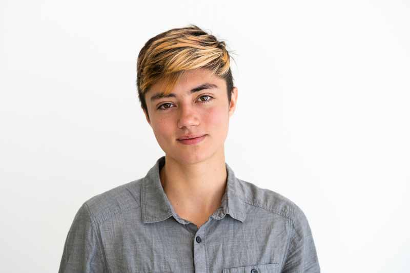
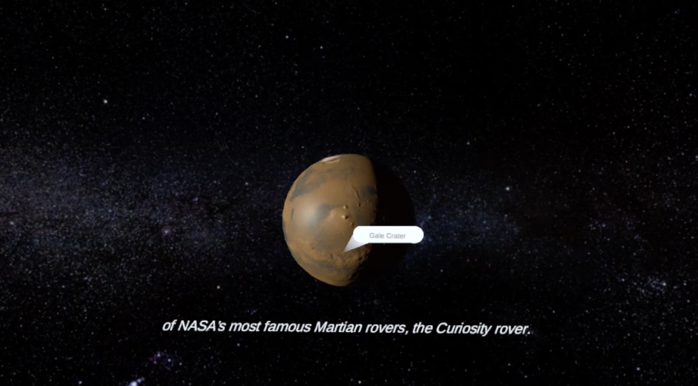
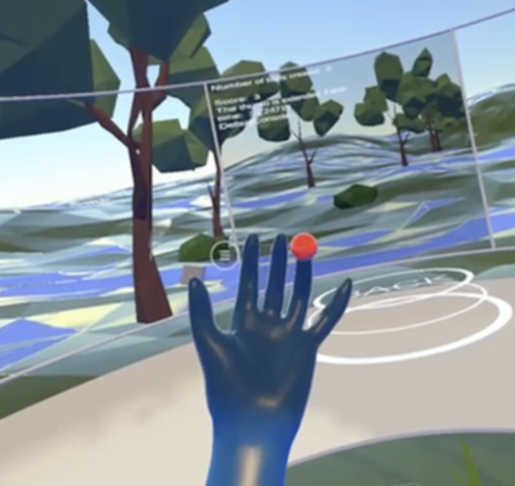
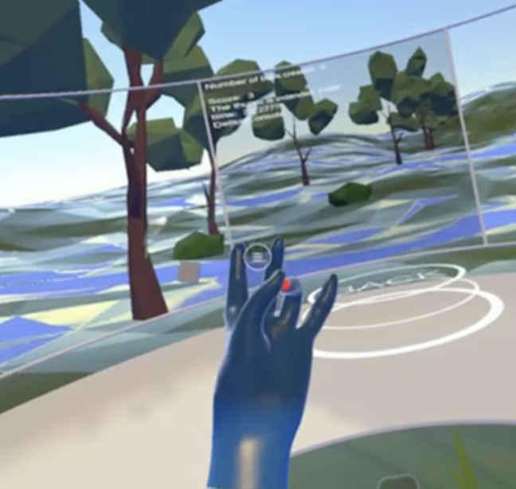
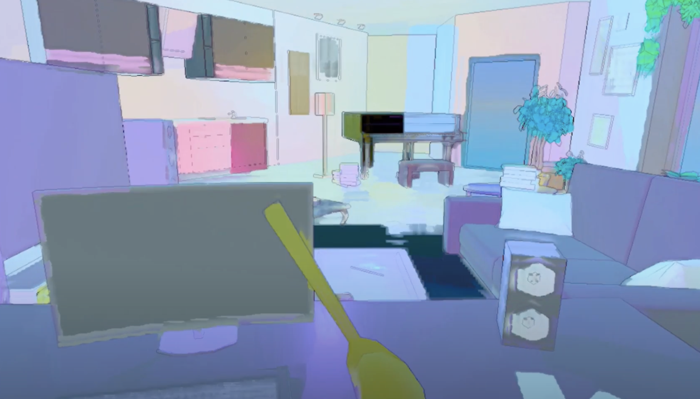
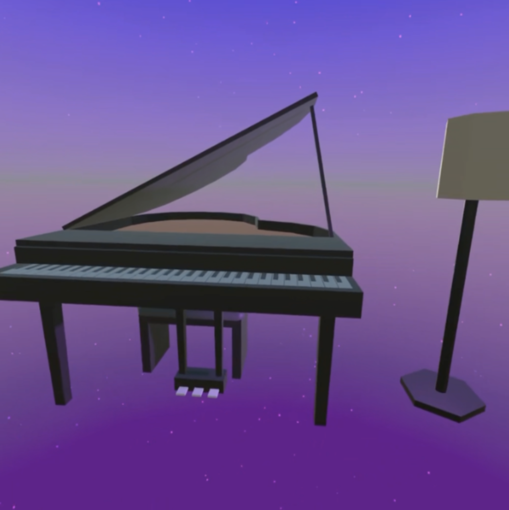
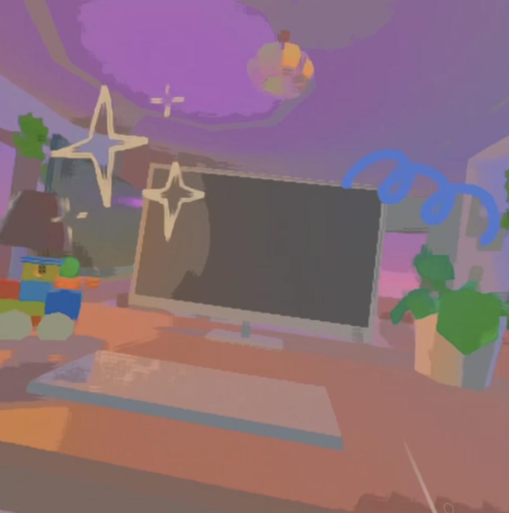

In this special first-of-its-kind elective, students explored the boundaries of virtual reality and the human body.
Topics included brain-computer interfaces with virtual reality, haptic technologies, and other senses.
Guest lecturers were experts in both academia and industry.
Students learned how to make virtual reality experiences in the game engine Unity, and the semester culminated with a demos of
new product/service which were presented to an audience of distinguished guests/investors/partners.
Ken Zolot is a Senior Lecturer in the department of Mechanical Engineering at MIT, and a Professor of Creative Entrepreneurship at The Berklee College of Music.
His other work can be found at http://www.mit.edu/people/zolot
Aubrey Simonson

Aubrey is a Unity developer and VR interaction designer.
He is a current PhD student at Northeastern University in the
College of Arts, Design and Media.
He holds an MS from the MIT Media Lab, where he wrote the thesis
An Integrated System for Interaction in Virtual Environments
as a memeber of the Fluid Interfaces Group,
and BAs from Wellesley College in Political Science and Media Arts and Sciences.
His other work can be found at aubreysimonson.com.
He also made this website :)
Wyatt Roy
Put bio here!
Juan Riera Gomez
Put bio here!
Guest Speakers
In order of appearance...
Rus Gant
Rus Gant is a well-regarded international multi-media artist, XR Architect,
computer engineer, educator and visual futurist. He is currently on the
Research staff at Harvard University in the Department of Earth & Planetary Sciences,
where he currently runs the Visualization Research Laboratory and the Virtual Harvard Project,
he was recently a Research Fellow at MIT at the Center for Media Studies and for 10 years
was adjunct faculty at Tokyo’s Showa Women’s University's Institute for Language and Culture.
He is currently pursuing work in the future of real-time 3D computer graphics and imaging
for virtual production, next generation virtual reality, augmented reality, AI for visualization
and immersive telepresence for science teaching and research. He has served as the Lead Technical
artist for the Giza 3D project at Harvard and the Museum of Fine Arts reconstructing the pyramids,
temples and tombs on the Egyptian Giza Plateau in virtual reality. He is a past fellow at the
MIT Center for Advanced Visual Studies, was director of the Visualization Group of MIT's Project
Athena and a Fellow at the Center for Creative Inquiry at Carnegie Mellon University.
He was the architect of the first digital visualization lab at Polaroid.
He was the founder of the first Multi-media Group at International Computers Ltd. in the UK and
Created the first Visualization Centre for the Futures Group of the DTI in London.
For more than 40 years he has applied his visualization skills to work in art, computer science,
science education, archaeology and museology for some of the world’s leading museums and universities.
For more than 50 years his art practice has been about exploring new media and technology to tell old stories.
As a computer hardware and software engineer he has constantly been at the forefront of the science of
computer visualization. As a researcher and artist he has created and developed new techniques in 3D visualization,
virtual reality and digital museology and archaeology. These techniques have often been applied to scientific
research in multiple disciplines including the reconstruction of the art and architecture of ancient cultures.
Rob Jaczko
Rob Jaczko
is an independent recording engineer and record producer, and Chair,
Music Production and Engineering Dept. at Berklee College of Music.
He is a former staff engineer at A&M Studios, Hollywood, California, where
his engineering credits include Aerosmith, Vinnie Colaiuta, Sheryl Crow,
Crowded House, and Hall and Oates. He is also the founder of View Works,
specializing in stereoscopic 3D imaging and immersive audio solutions.
Yao Wang
Yao Wang
is a SOCAN Award–winning composer, sound designer, and immersive content creator.
She is a cofounder of ICTUS Audio, a Vancouver, Canada–based music production studio
focused on providing sound and music services for visual media. Passionate about the
marriage of audio and new technology, Wang is currently interested in immersive worlds
and storytelling. She aims to elevate art and music with new technologies and create
novel experiences without ever overshadowing the core message and values that they embody.
Akito van Troyer
Akito van Troyer is an
Associate Professor of Electronic Production and Design at Berklee College of Music
and a Research Affiliate at MIT Media Lab. His interdisciplinary research focuses
on the exploration and development of new musical experiences that enrich people's
lives and impact the future of human expression. Akito conducts and accomplishes his
research through innovations in the fields of musical instrument design, music production,
performance, and audience participation. He obtained his Ph.D. degree from the
MIT Media Lab in 2018, designing and building innovative interactive music systems that
inspire and guide people in discovering their own musical language. Akito previously
completed his Masters through the MIT Media Lab in 2012, designing new performance systems
that encourage audience participation and augment the experience of audience members through
interconnected networks. He also earned a Masters degree in 2010 from the
Georgia Tech Center for Music Technology, building computer-based live performance
platforms for laptop orchestra.
Jon Radoff
Jon Radoff
is an American entrepreneur, author and game designer. His work has focused on
online communities, Internet media and computer games. He is CEO and co-founder of
Beamable, a Live Game services platform that enables the creation of online games based on Unity.
Andrzej Banburski-Fahey
Andrzej Banburski-Faheyis a Principal Researcher at Microsoft,
and former Postdoctoral Researcher at the Center for Brains, Minds + Machines at MIT,
working on the intersection of AI and VR.
Lukasz Porwol
Dr Lukasz Porwol
(Luke Porwol or Dr Luke) is E-Gov Unit Leader and Research Fellow
at the Insight Centre for Data Analytics, University of Galway, Ireland.
Dr Porwol is also an SFI Research Fellow at Fidelity Investments and the Head of Sponsorship
at MIT Reality Hack, Boston, USA.
His research area is the application of convergent emerging technologies such as
Virtual Reality, Augmented Reality and AI to support digital public and business service innovation.
He focuses on effective communication through better engagement, collaboration, and co-creation,
particularly in e-Participation.
Cathy Fang
Cath Fang is a PhD Student at MIT Media Lab's Fluid Interfaces Group.
She holds a Bachelors degree with Honors from Carnegie Mellon University
in Mechanical Engineering and Human-Computer Interaction.
Her experience spans across the domain of mechatronics, haptics, wearables, accessibility,
and computational fabrication.
Previously,she has worked at Microsoft, Apple, IDEO, and Magic Leap.
Lori Landay
Lori Landay is a Professor of Cultural Studies
at Berklee College of Music. Her creative and critical work explores themes of
transformation in audiovisual cultural forms, technology, and perception.
She is the author of I Love Lucy (TV Milestones Series) and Madcaps, Screwballs, and Con Women:
The Female Trickster in American Culture, as well as numerous publications on topics including
Minecraft, LEGO, virtual worlds, virtual subjectivity, digital narrative, silent film,
and gender and comedy. She teaches Dream Machine, as well as other courses.
Student Projects
Aware
Alexia Asgari
Hardware development, Unity Development
Avantika Kolluru
Competitive Research, User Research, Interviewing Experts
Cameron Contreras
Researching supporting theory, user research, presentation planning and design
Jenny Wang
Hardware Development, Unity Development
Jett Garrett
Sound design and audio, researching supporting theory, interviewing experts
Aware is a virtual reality (VR) experience that aims to help people who struggle with
big emotions improve their coping skills and interoception. Individuals will use
biometric-tracking hardware that controls visual stimuli in the VR environment
corresponding to emotion-associated symptoms in the body. Users will engage in a
de-escalation environment that includes a calming scene and accessibility preferences
and will be guided through preferred coping strategies (for eg. box breathing). Our vision
is for this VR experience to serve as a guide to emotional regulation and a documentation
tool that tracks the success of coping techniques for a person.
La Quinta del Sordo is an immersive VR experience that brings visitors into Francisco de
Goya’s home, where his final haunting masterpieces, the Black Paintings, were hidden.
Visitors can explore the recreated 'house of the deaf', revealing Goya's inner turmoil
through these eerie works in place as the artist himself experienced them. As you
wander the corridors alongside Goya's spirit, you're faced with a choice: honor the
artist's secretive intent or unveil the art to the world. This journey offers a unique insight
into the darkness that shaped Goya's genius and challenges your understanding of his art
and his legacy.
Educational Content Development, Unity Development
Luis Gaitan
Educational Content Development, Unity Development
Gozie Nwaka
UI Design
Isminur Yilar
Stakeholder Research
Emily Cao
Background Music
This educational module in our overall Aeroverse project aims to teach undergraduate students
about spacecraft systems engineering, a fundamental concept in aerospace engineering. In our
simulation, students will be introduced to Mars and the Curiosity mission. Students will discover
the parts of the rover and understand the systems engineering process behind the rover’s
design. Students will have the ability to operate the rover on Mars, mimicking operations in real
life, and later features will allow the student to control the robotic sampling drill to collect rock
samples.

The Mars simulation will be presented in the upcoming January IAP Aeroverse class during our
“robotic space week.” In the overall Aeroverse class, students will be introduced to principles
and applications of aerospace engineering through a series of challenges involving air and
space. Other modules will have features such as analyzing and flying a jet plane, exploring the
surface of Mars using remote controlled and autonomous vehicles, and conducting operations in
the International Space Station (ISS). Through these challenges, students will learn
fundamental concepts in aerospace engineering such as aerodynamics, systems engineering,
and flight dynamics. This first iteration of the subject will include only VR applications, using the
Meta Quest 2 headset. The Aeroverse course hopes to collect data regarding the impact of VR
as a teaching medium and to quantify the effect it has on students’ learning outcomes.
expert outreach, hand tracking, team logistics, video, and presentation
Yining Bei
game environment, scripting, start menu UI/UX
Bethanie Liu
Game Music and Start Menu Music, Presentation Prep and Presentation
Pierre Lonni
scripting, hand tracking, scenes development, game design
Xinyi Tang
hand tracking, music game development, expert interview, user flow
Virtual Vitality is a VR-gamified physical therapy tool that helps stroke patients
regain their finger movement abilities. The game uses Meta Quest’s built-in hand motion
capture to show users’ hands in different VR environments, where physiotherapy is
turned into a music game in which users pinch their fingers in response to objects
popping up on their individual fingers and creating a melody.


In our team, there is a member coping with ACL injuries, and two of us are
managing scoliosis. Motivated by the challenges we faced during our own physical
therapy journeys, we came together to create Virtual Vitality. Drawing from our personal
experiences, our objective is to enhance the physical therapy journey for individuals,
ensuring a more positive and effective long-term experience for a broader audience.
Our team has identified 2 main limitations in conventional physiotherapy practices:
Monotonous and repetitive approaches
Progress takes time, and the long-term commitment often makes
patients feel defeated or lack motivation over time
Reflecting on those observations, we decided that this would be an excellent
concept to implement in Virtual Reality/Extended Reality as its high potential to increase
interactivity could be beneficial to leverage. While a lot of hospitals and clinics have
been trying to incorporate entertainment into their rehabilitation programs, a lot of
them are just providing TV screens for patients to distract themselves while they carry out
their rehab exercises, resulting in a single-way input of entertainment for them.
Building up on that lack of intractability, our project creates a two-way
communication where patients can look at the soothing landscape in their headset and
listen to the music and at the same time, jam and play along to the music. From our
observations, we believe that entertainment is the most effective when the user is
involved in the creation process, and in our case, users will be majorly involved in the
music creation process. This will also help a lot with distracting patients from pain and
the dull nature of physiotherapy.
Visual Design (Blender and Rigging for characters and objects)
Samay Godika
Scripting, Unity
Lindsay Blocker
Left for Bread is a multiplayer horror game with a comedic element embedded into the
experience. Setting it aside from the classic horror genre is the comedic intent: being
chased by a loaf of bread provides an interesting contrast to the typical
run-from-monster archetype. There are five playable characters, namely flour, eggs,
salt, water, and the baguette. The baguette seeks to hunt down the ingredient players
as the game begins to become stronger; to take down the baker who neglected the
oven, the baguette requires the ingredients from which it can extract strength.
Travel through time, between two different years of Tamiko’s life to solve
puzzles and repair her relationship with her mother.



Video games and entertainment are one of the most common applications for VR,
but narrative games are still one of the more underdeveloped genres. Similar to
how the game Before Your Eyes was “revolutionary” in its way of having its
player interact with the game via another modality (eyetracking), our game set out
to have another unique modality for the player to use (sitting and standing). As
the capabilities of virtual reality continue to grow, the prospect of a player using
an otherwise ordinary action to interact with a game becomes more possible.
Our exploration of sitting/standing as a mechanic within a
storytelling game may prove to be significant in the future as something that
hasn’t yet been done before by other games.
"Cosmic Cube Crush" is a virtual reality
experience that takes the excitement and mechanics of a classic match-3 game to the next level.
Placing players inside a 3D cube universe, the game challenges users to manipulate the universe
around them, creating combinations to clear levels, and progressing through an engaging
environment, such as a warm, cozy kitchen top, the space-time continuum, or colorful galaxies.
Our hope is to introduce a new conceptual game to the VR user base and is designed for all ages.
Imagine a world where conquering phobias is an empowering and gamified experience.
Our project pioneers Extended Reality (XR) therapy for phobias, addressing the spectrum
from mild discomfort to paralyzing panic attacks. XR uniquely allows users' agency to
control their experiences, with a safety net to halt virtual fear at any moment. Focusing
initially on Trypophobia (fear of holes), we creatively manipulate and gamify the
experience, incentivizing users with virtual rewards.
What if we could walk up a
virtual hill and actually feel the incline? While VR has made leaps in visual and auditory
immersion, the physical aspect remained largely unexplored. Our goal was to fill this
gap by developing a device that could replicate the feeling of different terrains
underfoot, making the virtual experience more tangible and engaging.
 Ken Zolot is a Senior Lecturer in the department of Mechanical Engineering at MIT, and a Professor of Creative Entrepreneurship at The Berklee College of Music.
His other work can be found at http://www.mit.edu/people/zolot
Ken Zolot is a Senior Lecturer in the department of Mechanical Engineering at MIT, and a Professor of Creative Entrepreneurship at The Berklee College of Music.
His other work can be found at http://www.mit.edu/people/zolot